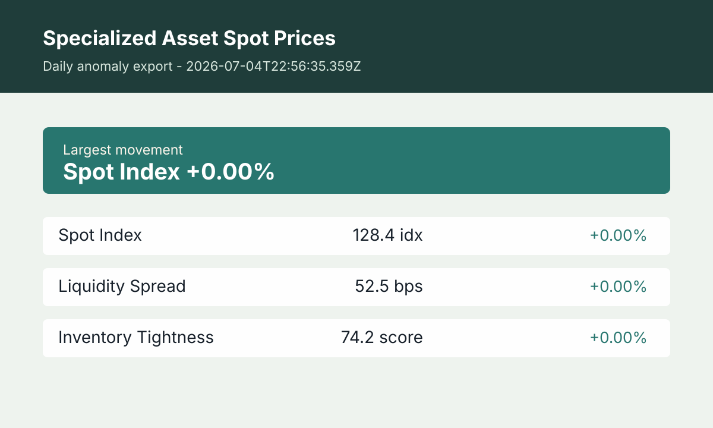

Current read
Specialized asset markets are often thin, fragmented, and slow to explain themselves. This tracker turns a small set of repeatable signals into a readable market note so collectors, operators, and analysts can understand whether price movement is being driven by liquidity, inventory, or broad demand pressure.
The latest update was built at 2026-07-05T01:20:37.313Z. The current metric set is Spot Index: 128.4 idx; Liquidity Spread: 52.5 bps; Inventory Tightness: 74.2 score. Spot Index is the lead movement at +0.00% from the previous reading. This page is designed as a daily reference for readers who want the context behind the numbers, not just a thin quote table.
How to read this tracker
Start with the spot index, then compare it with liquidity spread and inventory tightness. A rising spot index with a widening spread can mean reported prices are moving faster than executable bids. A rising spot index with tighter inventory usually points to genuine scarcity. When all three measures are flat, the practical takeaway is patience rather than urgency.
- Spot Index: A normalized estimate of broad spot-price pressure across the tracked basket. It is useful for seeing direction, not for valuing one individual item.
- Liquidity Spread: The difference between likely sell-side ask levels and reachable bid interest. Wider spreads mean the headline market may be harder to execute.
- Inventory Tightness: A scarcity score that rises when available supply appears constrained relative to normal market depth.
Editorial method
The page keeps the same metric definitions on every refresh, compares the latest record with the previous stored record, and highlights the largest percentage movement. The goal is not to promise a trade recommendation. The goal is to make market structure easier to read by separating price, spread, and supply conditions.
Alternative and specialized assets can trade privately, so any public index should be treated as directional context. Readers should confirm actual bids, fees, storage costs, authentication, and settlement terms before acting on a price signal.
Frequently asked questions
Is this financial advice?
No. This is publisher research and market commentary. It is meant to help readers ask better questions before they buy, sell, insure, store, or appraise a specialized asset.
Why track spreads instead of only prices?
Thin markets can show attractive headline prices while real buyers and sellers remain far apart. Spread context helps readers understand whether the quoted market is liquid or fragile.
How often is the page refreshed?
The local data engine refreshes on a six-hour cadence. The production page needs a successful deploy after each refresh before the public page reflects the newest build.